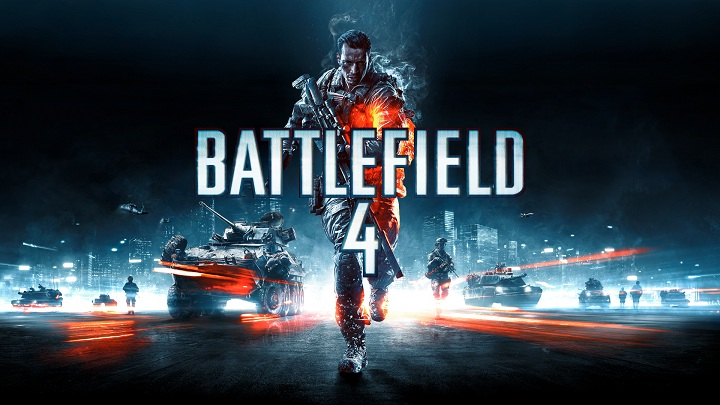
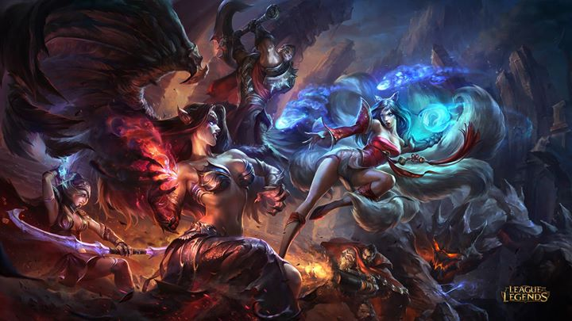
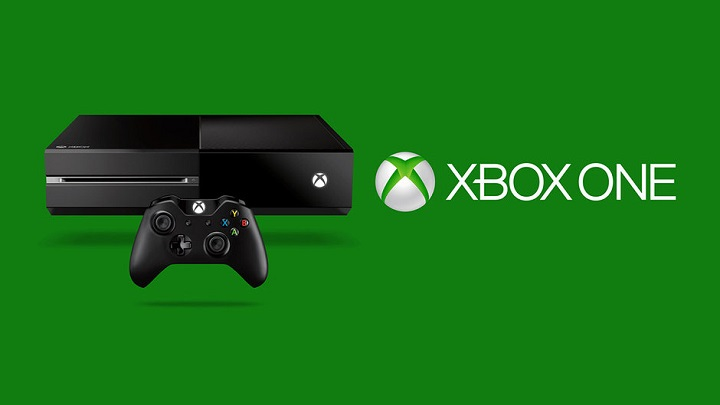
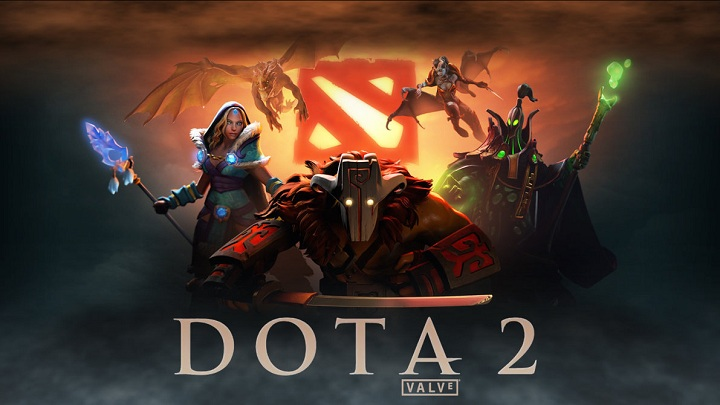
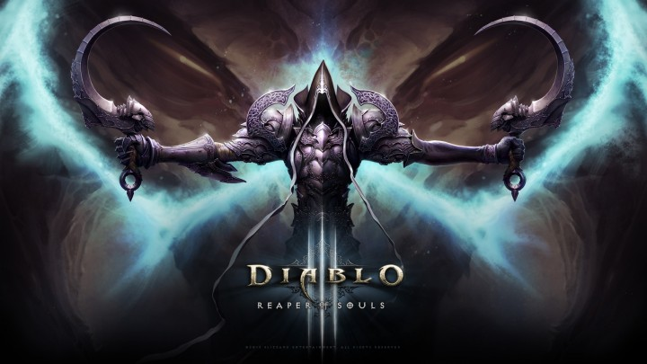
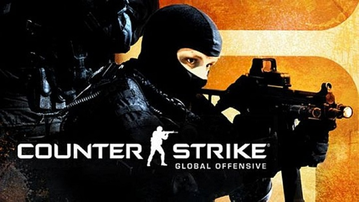
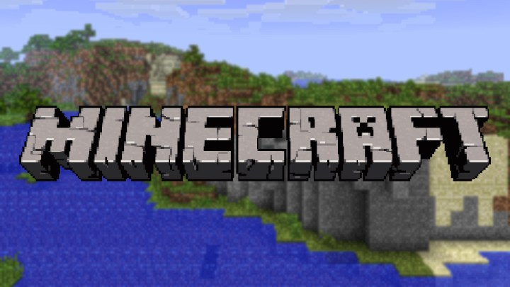

Games
Battlefield 4: atualizações para PS4, Xbox 360 e PC
Após um final de semana conturbado em que os servidores de Battlefield 4 sofreram um ataque deixando o modo multiplayer do jogo no PC impraticável por boa parte do período, uma série de medidas serão tomadas para melhorar o jogo. De acordo com a companhia, atualizações para as versões de PC, Xbox 360 e PlayStation 4 estão a caminho para corrigir diversas falhas do jogo.
18 jogadas impressionantes de League of Legends

League of Legends é um jogo cheio de surpresas e jogadas impressionantes. Quem se aventura pelo MOBA há algum tempo provavelmente já presenciou reviravoltas incríveis e de tirar o fôlego. Com a reação na hora certa, é possível detonar com os inimigos de surpresa. Pensando nisso, a Tendência Comercial realizou uma compilação com 18 GIFs apresentando algumas das jogadas mais impressionantes.
Acompanhe tudo do LoL Worlds 2016
Os fãs de League of Legends de todo o mundo estão prontos para encarar um dos eventos de eSports mais aguardados do ano. O Campeonato Mundial do game, organizado pela própria Riot Games, está pronto para tomar os Estados Unidos entre os dias 29 de setembro e 29 de outubro com os melhores times por todo o planeta. A equipe INTZ finalmente conquistou a sonhada classificação para representar o país.
Microsoft reduz preço do XB1 no Brasil
A Brasil Game Show 2016 está quase aí, com muitas atrações e demonstrações bacanas para os jogadores conferirem, mas ainda há novidades no forno para o público do evento. A Microsoft confirmou que todos os Xbox nacionais terão uma redução de preço de R$ 200 do dia 1º de setembro até o dia 12 de outubro. A ação é para comemorar a maior feira de jogos do país e uma data icônica para presentes: o Dia das Crianças.
DotA 2: Sobre a atualização 6.87
A semana abriu violenta para os apaixonados por DotA 2. A Valve anunciou uma atualização para o seu MOBA que remexeu com os ânimos de todos os jogadores. O estúdio modificou elementos básicos dentro do seu game, trazendo muitas novidades interessantes para todos testarem nas próximas semanas. Pensando nessa enxurrada de novidades resolvemos fazer uma lista com as modificações mais impactantes.
Chegando ao nível 70 em apenas 1 min
Se você se considera um bom jogador, então é melhor rever seus conceitos. No vídeo acima, Dat Modz consegue realizar a proeza de subir 70 níveis em apenas um minuto. O rapaz teve a sorte de encontrar uma rara Cow Level que garante uma quantidade impressionante de experiência. Além disso, ele está usando um Anel Infernígneo com uma Gema da Facilidade que concede mais 500 pontos de XP para inimigos derrotados.
Os 10 melhores jogadores de CS:GO
Muita gente poderia duvidar que o bom e velho CS seria tão popular quanto na época de ouro das lan-houses, mas CS:GO conseguiu uma fama absurda graças aos eSports. O cenário competitivo do game está no auge, o que significa que os melhores jogadores realmente ficam famosos entre os fãs. Porém, eles precisam ser bons. Muito bons. É hora de sentir aquela pontada de inveja — ou se inspirar de vez.
Minecraft: Sobre a atualização 1.9
Cansado de ficar sempre nas monótonas batalhas de Minecraft? Pois saiba que trazemos boas notícias: a Mojang acaba de lançar a atualização, desta vez focada pesadamente no sistema de combate do game. Para começar, a Mojang adicionou escudos e a possibilidade de encantar suas flechas, além disso, é permitido que os personagens andem com dois equipamentos ao mesmo tempo podendo usá-los com os cliques do mouse.